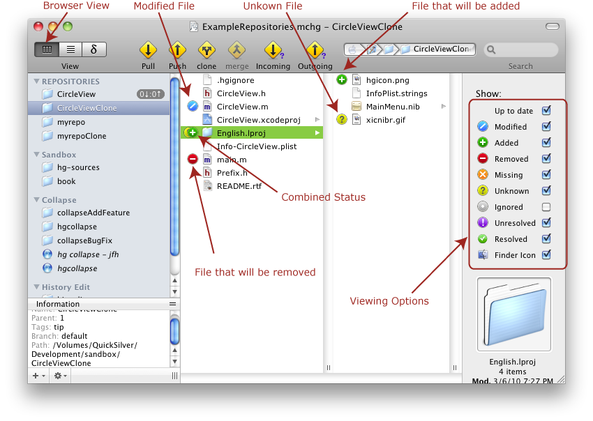

You can switch the view of the Document Window to the Browser View through the View menu. A typical Browser view might be:

In the Browser View you can see the current status of the files and folders in the repository. Which files and folders are shown in the browser depend on which viewing options you have chosen in the right sidebar. Depending upon the status of the files you have selected, you can choose to perform various actions available from the Action menu. These actions can include committing changes, reverting changes, deleting files, adding new files, inspecting the files changes, etc.
The status of a file is always with respect to its parent revision. This could be the last commit; or if the update command has been used, it could be some other revision. With respect to the parent revision, we can talk about files and folders which are modified, removed, added, missing, unknown, etc.
The various file viewing options (like Modified, Added, Removed, etc., which appear in the right sidebar) control the class of files that will be shown in the browser. Checking a particular option will cause any folders and files with the specified status to be correspondingly shown. For instance, in the screenshot, 'Modified' is checked, and we see that the file CircleView.m, which has been modified relative to the parent revision, is consequently shown. ‘Up to date’ is also checked, so we can see all the files which are tracked by Mercurial but have not been changed in any way since the parent revision.
| Checkbox | Controls the showing or hiding of: |
| Up to date | Controls the showing or hiding of files which are up to date. (In Mercurial terminology, 'Clean'.) |
| Modified | Controls the showing or hiding of files which are modified. |
| Added | Controls the showing or hiding of files which have been added. |
| Removed | Controls the showing or hiding of files which have been removed. |
| Missing | Controls the showing or hiding of files which are missing. |
| Untracked | Controls the showing or hiding of files which are not yet tracked. |
| Ignored | Controls the showing or hiding of files which are to be ignored. |
| Unresolved | Controls the showing or hiding of files which after a merge have merge conflicts. |
| Resolved | Controls the showing or hiding of files which have been merged since the last commit, and whose merge conflicts have been resolved. |
| Status Icons | Controls the showing or hiding of finder icons indicating the status of each of the files and folders that are displayed in the browser. |